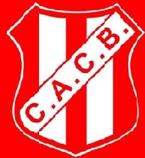

- Cancha de Futbol 5, 7 y 11
- Estadio Cubierto para Basquet y Voley
- Playon para distintos deportes
- Canchas de Padel
- Cancha de bocas

Club Atletico Costa BravaDireccion: Calle 23 Nº 1050 (sede)Telefono: 02302 - 434182Fecha de Inaguracion: 21 de agosto de 1932 |
 |
|
|